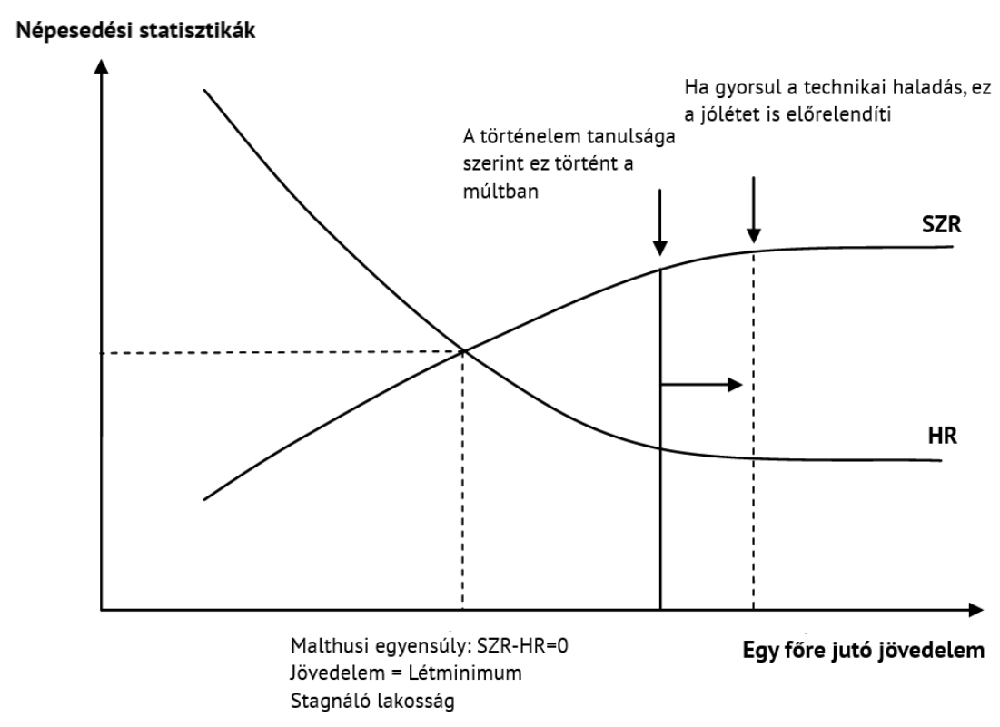
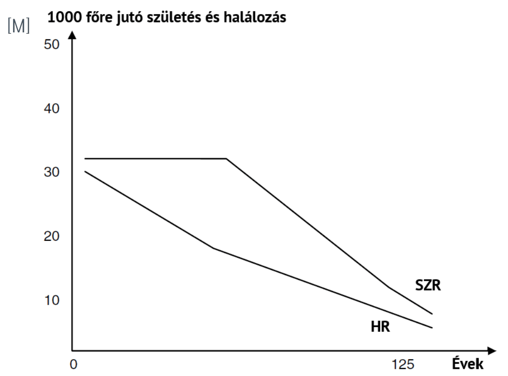
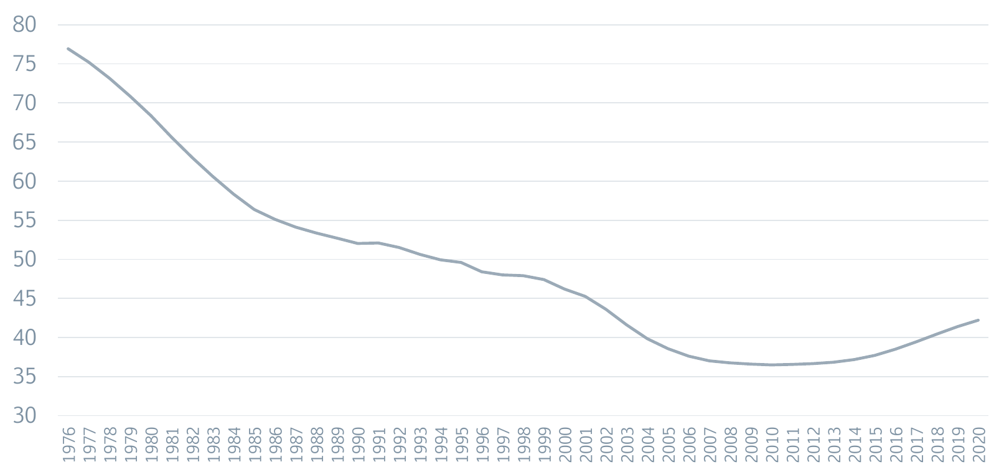
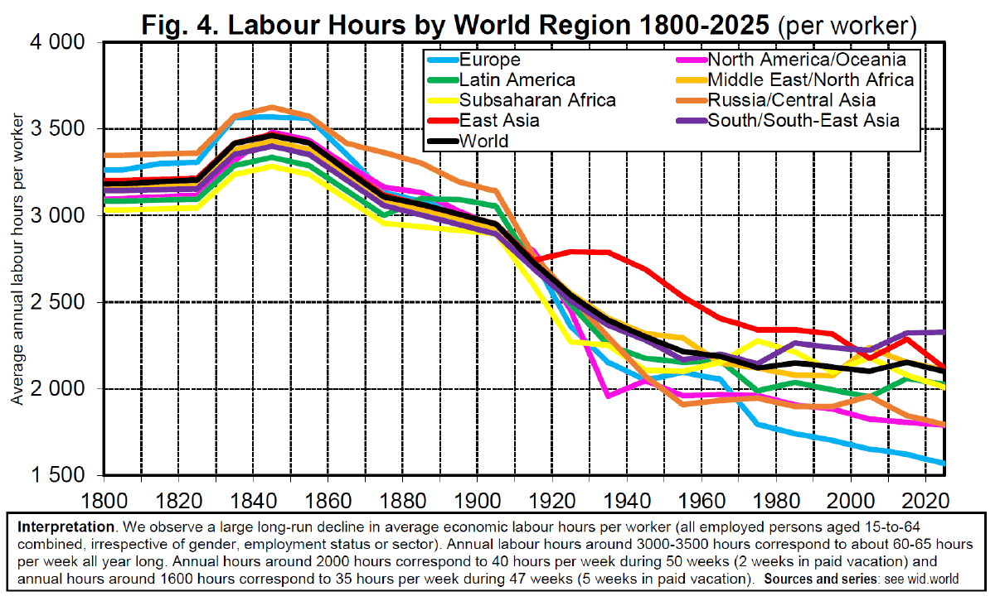
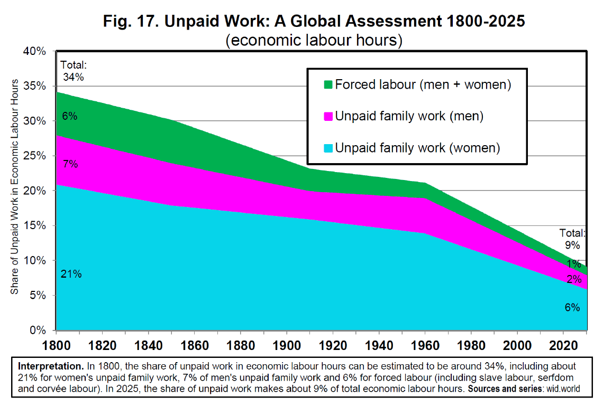
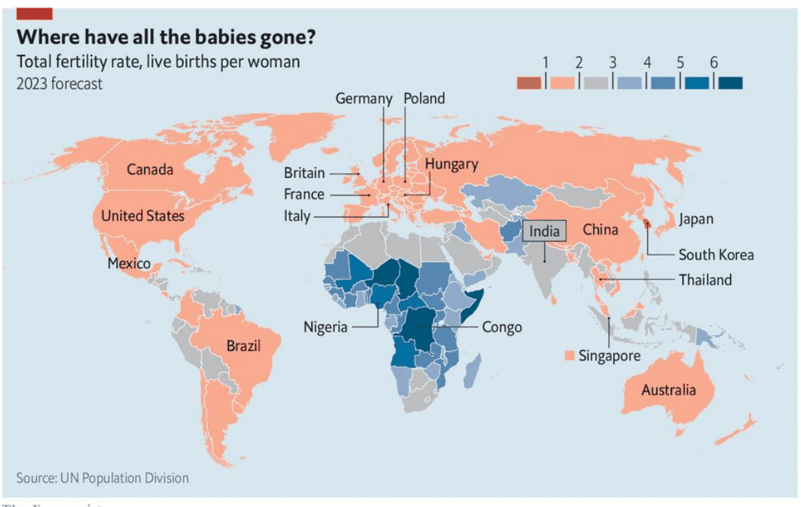
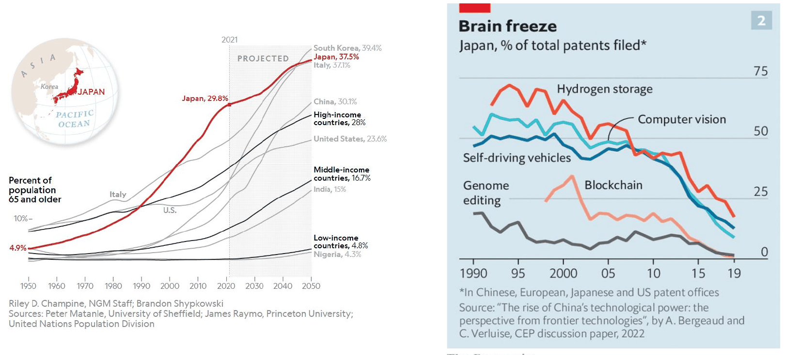

3. fejezet · diák: 52–72
Népességnövekedés és hatásai
„Az ember sokasodik, de a föld nem.”
Cecil Rhodes
Az előző fejezet végén láttuk, hogy a nagyobb piac mélyebb szakosodást tesz lehetővé – és a piac egyik kulcsa a népesség. De vajon jót tesz-e a fejlődésnek, ha egyre többen vagyunk? Vagy épp felélünk mindent, amit megtermelünk?
Nyitó eset: a fogamzásgátló tabletta 52–53. dia
Az első fogamzásgátló tabletták az 1960-as évek elején jelentek meg az Egyesült Államokban, és onnan terjedtek el világszerte. A pirula erős bizonyosságot vitt a szex és a teherbe esés addig nehezen kontrollálható kapcsolatába. Ennek óriási gazdasági és társadalmi következményei lettek:
- lecsökkentette a szakmai pályafutás hosszú távú befektetési költségeit – a nők tervezhették a karrierjüket;
- rengeteg nőnek tette lehetővé, hogy befejezze az egyetemet;
- hozzájárult a szex és a házasság szétválásához, aminek szintén számos tovagyűrűző hatása lett.
Egy 2012-es tanulmány (Bailey, Hershbein és Miller) szerint a férfiak és nők keresete közötti bérszakadék 1990 és 2000 közötti csökkenésének 30%-a a fogamzásgátló tablettának köszönhető.
Az eset azt mutatja, hogy a népesedési döntések – hány gyereket, mikor vállalunk – közvetlenül hatnak a gazdaságra. És fordítva: egy technológiai újítás átalakítja a népesedési döntéseket. A kapcsolat tehát kétirányú.
A fejezet kérdése: gyorsítja vagy fékezi a népesség növekedése a fejlődést? És mi történik, ha a népesség már nem nő tovább?
Útiterv
✏️ Gondold végig – A fogamzásgátló tabletta
- Miért érte meg a tabletta megjelenése után több nőnek hosszú egyetemi tanulmányokba fogni?
Mintaválasz
Mert a gyerekvállalás időzíthetővé vált. A hosszú tanulás és karrierépítés befektetés, ami csak akkor térül meg, ha nem szakítja meg váratlanul egy terhesség. A tabletta csökkentette ezt a kockázatot, így a befektetés várható hozama nőtt.
- Miért mondjuk, hogy a népesség és a fejlődés kapcsolata kétirányú?
Mintaválasz
Mert a népesség hat a gazdaságra (munkaerő, piacméret, innovátorok száma), a fejlődés pedig a népesedési döntésekre (pl. a tabletta, az alacsonyabb gyermekhalandóság vagy a magasabb iskolázottság kevesebb, később vállalt gyereket jelent).
Malthus elmélete és hibái 54–56. dia
A népesség és a jólét kapcsolatának leghíresebb – és mára elavult – elmélete Thomas Malthus nevéhez fűződik. 1798-ban megjelent Tanulmány a népesedés törvényéről című műve volt az első közgazdasági elemzés, amely a növekedés hosszú távú fenntarthatóságát a szűkös erőforrások – esetünkben a termőföld – korlátaihoz kötötte. Annyira lesújtó következtetésre jutott, hogy Thomas Carlyle 1849-ben „lehangoló tudománynak” (dismal science) nevezte a közgazdaságtant.
Malthus érvelése lépésről lépésre:
- A termőföld véges mennyiségben áll rendelkezésre.
- Ahogy nő a népesség, csökken az egy főre jutó termőföld.
- Ez csökkenő hozadékot eredményez: csökken az egy főre eső élelmiszertermelés.
- A kevesebb élelem csökkenti a jólétet, ezért csökken a születések és nő a halálozások száma.
- Így a népesség visszaesik.
- Végül beáll a malthusi egyensúly: stagnáló népesség és jólét, a létminimumnak megfelelő jövedelem. Ebből legfeljebb nagy katasztrófák (járvány, háború) lendíthetik ki ideiglenesen a gazdaságot.
Az elmélet egyetlen ábrán is összefoglalható. A vízszintes tengelyen az egy főre jutó jövedelem, a függőlegesen a születési ráta (SZR) és a halálozási ráta (HR) van. Ha nő a jövedelem, több gyerek születik (SZR emelkedik), és kevesebben halnak meg (HR csökken).

Hogyan olvasd az ábrát?
- Az egyensúly stabil: ha a jövedelem a metszéspont fölé emelkedik, több a születés, mint a halálozás → nő a népesség → csökken az egy főre jutó jövedelem → visszatérünk a metszésponthoz. Lefelé ugyanez fordítva.
- Egy technológiai javulás egyszeri jövedelemnövekedést okoz (jobbra mozdulunk), de a népesség addig nő, amíg el nem éli a többletet. A múltban – a történelem tanulsága szerint – ez történt.
- Ha a technikai haladás gyorsul, és gyorsabb, mint ahogy a népesség felélné, a jólét is tartósan előrelép. Ez történt az ipari forradalom után.
A malthusi világban tehát a technológiai javulás hosszú távon nem gazdagabb, hanem több embert eredményez, ugyanazon a létminimumon. Ezért mondják, hogy az ipari forradalom előtt a technológia a népesség nagyságában, nem az életszínvonalban látszott.
Miért hibás az elmélet?
- Nem számol a folyamatos hatékonyságjavulással – egységnyi földterületen egyre több élelmiszer termelhető:
- betakarítási arány (hányszor takarítanak be évente egységnyi földről): a vándorló, égetéses földművelés 0,05-ös értékéről (húszévente egyszer) évi 1-re, de akár 2-re vagy 3-ra is nőhet;
- termésátlag (egységnyi területről betakarított termény mennyisége) – jobb vetőmag, trágya, eszközök.
- Zárt gazdaságot feltételez, amely nem tud szakosodni, és nem tud a kereskedelmi kapcsolatai révén másoktól jobb technológiát eltanulni (vö. 2. fejezet).
- A gyerekvállalást egyoldalúan kezeli: csak a gyerekek mennyisége számít benne, a minőségük (egészségük, iskolázottságuk) nem.
Ne keverd össze: Malthus szerint a népességnövekedés visszafogja a jólétet (csökkenő hozadék), a következő szakaszban tárgyalt Pepys szerint gyorsítja a fejlődést (több innovátor). A ZH gyakran épp ezt a párt cseréli fel a rossz válaszokban.
✏️ Gondold végig – Malthus
- Írd le Malthus oksági láncát öt lépésben!
Mintaválasz
Véges föld → a népesség növekedésével csökken az egy főre jutó föld → csökkenő hozadék, kevesebb élelem fejenként → kevesebb születés, több halálozás → a népesség visszaesik → malthusi egyensúly a létminimumon.
- Egy középkori faluban új ekét vezetnek be, és tíz évig jobban élnek. Ötven év múlva ugyanúgy a létminimumon élnek,
csak többen vannak. Mivel magyarázod?
Mintaválasz
A malthusi mechanizmussal: a technológiai javulás egyszeri jövedelemtöbbletet adott, ez növelte a születéseket és csökkentette a halálozást, a népesség addig nőtt, amíg az egy főre jutó jövedelem vissza nem esett a létminimumra.
- Melyik feltevése bizonyult a legnagyobb tévedésnek az ipari forradalom után?
Mintaválasz
Hogy nem számolt a folyamatos hatékonyságjavulással. Az ipari forradalom után a technikai haladás gyorsabb lett, mint a népesség növekedése, így a jólét tartósan nőhetett. Emellett a nyitott gazdaságok kereskedhettek, a családok pedig kevesebb, de „jobb minőségű” gyereket vállaltak.
Gyerekvállalási stratégiák és a demográfiai átmenet 57–59. dia
Malthus harmadik hibája – hogy a családok csak a gyerekek számára figyelnek – egy toszkániai kistelepülés több száz éves anyakönyvi adataiból jól látszik:
| Az anya születési éve | Feleség kora a házasságkötéskor | Szülések száma anyánként | Az első és utolsó gyerek közötti évek | 10 éves korig túlélt gyerekek | Túlélés esélye 10 éves korig |
|---|---|---|---|---|---|
| 1650–1749 | 23,3 | 3,85 | 7,67 | 2,12 | 55% |
| 1750–1849 | 22,1 | 5,04 | 10,82 | 3,30 | 65% |
| 1850–1874 | 21,4 | 5,43 | 11,73 | 4,27 | 79% |
| 1875–1899 | 24,8 | 3,93 | 9,38 | 3,43 | 87% |
| 1900–1920 | 24,5 | 2,40 | 6,55 | 2,38 | 99% |
Figyeld meg a mintázatot! Ahogy javult a gyerekek túlélési esélye, eleinte több gyerek született, de a 19. század második felétől a családok kevesebb gyereket vállaltak, később házasodtak, és rövidebb időszakra sűrítették a szüléseket. 1900–1920-ban már 2,4 szülésből 2,38 gyerek élte meg a 10 éves kort. A családok tehát alkalmazkodtak: ha a gyerekek nagy valószínűséggel életben maradnak, kevesebbet vállalnak, de azokba többet fektetnek.
A közgazdaságtan ezt a mennyiség–minőség választásnak hívja (Gary Becker): a szülők kevesebb gyereket vállalnak, de mindegyikre több időt, pénzt és oktatást fordítanak. Ez az emberi tőke felhalmozásának egyik alapja (5. fejezet).
Demográfiai átmenet: az a folyamat, amelynek során egy társadalom a magas születési és halálozási rátájú állapotból az alacsony születési és halálozási rátájú állapotba jut. A kulcs a sorrend: előbb a halálozás csökken, és csak késéssel a születések száma.

jobb élelmezés, higiénia, orvoslás → csökken a halálozás → a születés még magas → gyors népességnövekedés → a családok alkalmazkodnak, csökken a születés → lassul, majd megáll a növekedés
A demográfusok általában négy szakaszt különítenek el: (1) magas születés és halálozás, lassú növekedés; (2) csökkenő halálozás, robbanásszerű növekedés; (3) csökkenő születés, lassuló növekedés; (4) alacsony születés és halálozás, stagnáló népesség. Európa a 19–20. században, a fejlődő országok nagy része a 20. század második felében haladt végig rajta.
Az eltartottsági ráta: egyszeri esély
Eltartottsági ráta = [(0–14 évesek) + (65 év felettiek)] / (15–64 évesek). Megmutatja, hány eltartottra (gyerekre és idősre) jut egy munkaképes korú ember.
Egy kis példa: ha egy 100 fős közösségben 20 gyerek, 15 idős és 65 munkaképes korú ember él, az eltartottsági ráta (20 + 15) / 65 ≈ 0,54, azaz 54%: 100 dolgozó korúra 54 eltartott jut.
A demográfiai átmenet közben ez a ráta különös utat jár be. Amikor a születések száma visszaesik, egy ideig kevés a gyerek, és még kevés az idős is – hiszen a népes korosztályok éppen munkaképes korban vannak. Ilyenkor az eltartottsági ráta hirtelen lecsökken: sok a dolgozó, kevés az eltartott, több jut megtakarításra és befektetésre. Ez a „minden ország egyszeri esélye”: később, ahogy a népes korosztályok megöregednek, a ráta újra nő.

Az „egyszeri esély” nem automatikus növekedés: csak akkor válik növekedéssé, ha a sok munkaképes korú ember munkát talál, és a megtakarítás befektetéssé válik. A ZH-n a helyes válasz az, hogy a demográfiai átmenet ideiglenesen növelheti a munkaképes korúak arányát.
✏️ Gondold végig – Demográfiai átmenet
- Miért nő gyorsan a népesség a demográfiai átmenet közepén?
Mintaválasz
Mert a halálozás már csökkent (jobb élelmezés, higiénia, orvoslás), de a születések száma még magas: a családok csak késéssel igazítják a gyerekvállalást az új helyzethez. A kettő különbsége a népesség gyors növekedése.
- Mit mutatnak a toszkániai adatok a családok döntéseiről?
Mintaválasz
Hogy a családok racionálisan alkalmazkodtak: amikor a gyerekek túlélési esélye 55%-ról 99%-ra nőtt, végül kevesebb gyereket vállaltak (5,43 helyett 2,4 szülés). A gyerekek „minősége” is számított, nem csak a számuk – ez Malthus egyik hibáját mutatja.
- Miért mondják, hogy az eltartottsági ráta csökkenése „minden ország egyszeri esélye”?
Mintaválasz
Mert a születések visszaesése után egy ideig kevés a gyerek és kevés az idős, így sok a dolgozó egy eltartottra – ez megtakarítást, befektetést és növekedést tesz lehetővé. De csak egyszer: a népes korosztályok megöregednek, és a ráta újra emelkedik (Kínában 2010 óta).
Egy valószerűbb elmélet: Pepys hipotézise 60–62. dia
Ha Malthus tévedett, mi a jobb magyarázat? A diasor egy 17. századi angol szerzőhöz, Samuel Pepyshez (1633–1703) köti az ellenkező gondolatot.
Pepys hipotézise:
- a technológiai fejlődés mértéke összefügg a népesség nagyságával;
- a kapcsolat pozitív: a növekvő népesség gyorsuló technikai haladással jár együtt;
- Pepys szavaival: egy 4 milliós közösségből nagyobb eséllyel kerül ki egy zseni, mint egy 400 ezresből.
A gondolat a modern fejlődéselméletben:
- Kremer (1993): nagyobb népesség → több innovátor.
- Galor–Weil (2000): jobb technológia → nagyobb eltartóképesség → növekvő emberi tőke → gyorsabb növekedés.
- Smith/Ricardo: a szakosodás törvénye – a nagyobb népesség nagyobb piacot és mélyebb munkamegosztást jelent (2. fejezet).
Samuel Pepys elsősorban híres naplójáról ismert: tengerészeti tisztviselőként, a Royal Society elnökeként közelről látta korának tudományos és technikai pezsgését. A róla elnevezett hipotézis a diasor szóhasználata; a modern irodalom a gondolatot főleg Kremer és Simon nevéhez köti.
Az ipari forradalom előtti növekedés modellje
Malthus és Pepys nem zárja ki egymást: a valóságban mindkét erő hat. A népességnövekedés három csatornán befolyásolja az egy főre eső jövedelmet – kettő növeli, egy csökkenti:
- népességnövekedés → (+) szakosodás (Smith/Ricardo) → (+) egy főre eső jövedelem;
- szakosodás → (+) gyakorlatból fakadó technikai haladás (Pepys) → (+) egy főre eső jövedelem;
- népességnövekedés → (+) csökkenő hozadék (Malthus) → (−) egy főre eső jövedelem.
Hogy a jövedelem nő-e, az az erők egyenlegén múlik. Az ipari forradalom előtt a két pozitív hatás lassú volt, ezért a malthusi fék sokszor erősebbnek bizonyult.
A modell erői két nagy korszakban másképp működtek:
| Korszak | Időszak | A technológia fejlődése | A hatékonyságjavulás következménye | A Föld népessége |
|---|---|---|---|---|
| Vadászó-gyűjtögető életmód | kb. i. e. 10 000-ig | Nagyon lassú; személyes tanulás, minimális transzfer | A terület eltartóképessége nem változik → több szabadidő, állandó népesség és jövedelem | kb. 6–8 millió |
| Neolitikus forradalom – agrártársadalmak | i. e. 10 000 – i. sz. 1800 | Lassú; személyes tanulás, szakosodás és transzfer | A terület eltartóképessége nő → növekvő kibocsátás, növekvő népesség | i. sz. 1: kb. 250 millió; 1800: kb. 1 milliárd |
A vadászó-gyűjtögetők a jobb technikát szabadidőre „váltották”, az agrártársadalmak népességre. Egyik korszakban sem nőtt tartósan az egy főre jutó jövedelem – ez csak az ipari forradalom után változott meg.
✏️ Gondold végig – Pepys és a modell
- Miért gyorsíthatja a nagyobb népesség a technikai haladást?
Mintaválasz
Mert több emberből több feltaláló, „zseni” kerül ki (Pepys, Kremer), a nagyobb piac mélyebb szakosodást tesz lehetővé (Smith/Ricardo), a szakosodás pedig gyorsítja a gyakorlati tanulást. Egy új ötlet ráadásul sok emberhez eljut, tehát nagyobb a haszna.
- Az ipari forradalom előtti modellben mitől függ, hogy nő-e az egy főre jutó jövedelem?
Mintaválasz
A pozitív erők (szakosodás, gyakorlati technikai haladás) és a negatív erő (malthusi csökkenő hozadék) egyenlegétől. Ha a technológia lassabban javul, mint ahogy a népesség felélné, a jövedelem stagnál.
- Mi a különbség a vadászó-gyűjtögetők és az agrártársadalmak között a hatékonyságjavulás felhasználásában?
Mintaválasz
A vadászó-gyűjtögetőknél a terület eltartóképessége nem változott, így a hatékonyabb technika szabadidőt hozott, a népesség és a jövedelem állandó maradt. Az agrártársadalmakban nőtt az eltartóképesség, ezért a javulás növekvő népességben csapódott le (i. sz. 1: 250 millió → 1800: 1 milliárd).
Mennyivel javult a technológia? A teljes tényezőtermelékenység 63–65. dia
Eddig azt mondtuk, a technológia „lassan” javult. De hogyan lehet ezt megmérni? A technológiát nem látjuk közvetlenül – csak azt, hogy mennyi bemenetből (föld, munka, tőke) mennyi kibocsátás lesz. Ha a kibocsátás gyorsabban nő, mint a bemenetek, a különbség a hatékonyság javulása.
Teljes tényezőtermelékenység (TFP, Total Factor Productivity): a TFP-növekedés a kibocsátás növekedésének az a része, amelyet a mért bemenetek súlyozott növekedése nem magyaráz meg.
TFP-növekedés = a kibocsátás növekedése − a bemenetek súlyozott növekedése
Képlettel: gTFP = gY − (sT·gT + sL·gL + sK·gK), ahol gY a gazdasági növekedés; gT, gL és gK a termőföld, a munkaerő és a tőke növekedési üteme; sT, sL és sK a tényezők jövedelmi részesedése (összegük 1).
Kidolgozott példa:
| Változó | Növekedési ütem | Jövedelmi részesedés |
|---|---|---|
| Reálkibocsátás (gY) | 1% | – |
| Termőföld (gT) | 0% | 50% |
| Munkaerő (gL) | 2% | 30% |
| Tőke (gK) | 1% | 20% |
A bemenetek súlyozott növekedése: 0,5 · 0% + 0,3 · 2% + 0,2 · 1% = 0,8%.
TFP-növekedés: 1% − 0,8% = 0,2%.
A bemeneteket súlyozva kell kivonni! Aki egyszerűen kivonja a növekedési ütemeket (1 − 0 − 2 − 1), −2%-ot kap – ennek nincs értelme. És a 0,8% nem a TFP, hanem a bemenetek hozzájárulása.
A probléma, hogy ilyen statisztikák csak az utolsó kb. 100–150 évre érhetők el. Korábbra alternatív módszerekkel becsülnek – például a városi lakosság arányából, vagy a bérek és az árak változásából.
Mennyi volt hát a TFP-növekedés az agrártársadalmakban? A francia régiók becslései szerint nagyon kevés:
| Régió | Időszak | Teljes időszakban | Az időszak végén |
|---|---|---|---|
| Párizs környéke | 1520–1789 | 0,13 | 0,31 |
| Északkelet-Franciaország | 1550–1789 | 0,13 | 0,13 |
| Normandia | 1520–1785 | 0,01 | 0,01 |
| Nyugat-Franciaország | 1611–1790 | −0,16 | −0,16 |
| Délkelet-Franciaország | 1580–1790 | 0,21 | 0,21 |
Az évi 0,15–0,2% igen lassú, de nem nulla. Mennyi idő alatt duplázódik meg ilyen tempóval a termelékenység – vagyis mikor hoz ugyanakkora föld kétszer akkora termést?
Pontosan: ln 2 / ln 1,002 ≈ 347 év. Közelítéssel (a „72-es szabály”): 72 / 0,2 = 360 év. Összehasonlításul: évi 2%-os növekedésnél 72 / 2 = 36 év alatt duplázódna.
A kevésbé fejlett vidékeken a TFP-növekedés valószínűleg nulla közeli volt, vagy akár negatív is.
Mire volt elég ez a lassú javulás? Folyamatos népességnövekedésre – és a 18. században már a várható élettartam is emelkedni kezdett:
| Év | Anglia | USA |
|---|---|---|
| 1725 | 32 | 50 |
| 1750 | 37 | 51 |
| 1800 | 36 | 56 |
✏️ Gondold végig – TFP
- Miért nevezik a TFP-t a „tudatlanságunk mértékének” is? (Kiegészítés)
Mintaválasz
Mert maradékként számoljuk: az a növekedés, amit a mért bemenetek nem magyaráznak. Ebbe minden belekerül, amit nem mérünk külön – technológia, szervezés, intézmények, de mérési hibák is.
- Egy gazdaságban a kibocsátás 3%-kal nő, a munkaerő 1%-kal, a tőke 4%-kal, a föld nem változik. A részesedések:
munka 60%, tőke 30%, föld 10%. Mekkora a TFP-növekedés?
Mintaválasz
Bemenetek: 0,6 · 1% + 0,3 · 4% + 0,1 · 0% = 0,6% + 1,2% = 1,8%. TFP: 3% − 1,8% = 1,2%.
- Miért fontos, hogy az agrártársadalmak TFP-növekedése „lassú, de nem nulla” volt?
Mintaválasz
Mert ez magyarázza, hogy a népesség az ipari forradalom előtt is lassan nőhetett, és az élettartam is elkezdett emelkedni – a technológia nem állt, csak évszázadok kellettek a duplázódáshoz (kb. 350 év). Az ipari forradalom ezt a tempót gyorsította fel.
Élelmezés, élettartam és munkaidő 66–69. dia
„Ha feltalálnánk egy wellsi időgépet, és visszamennénk a 18. századi Angliába, ez körülbelül annyira tenne jót az egészségünknek, mint egy űrruha nélküli holdutazás. A testünk egyszerűen túl nagy ahhoz, hogy túléljen azokon az ételadagokon, amelyek akkoriban elérhetők voltak.”
Angus Deaton
A Nobel-díjas gazdaságtörténész, Robert Fogel az élelmezés és a növekedés kapcsolatát vizsgálta. 1790 és 1980 közötti angol adatokat elemezve (2004) arra jutott, hogy:
- Nagy-Britanniában az egy főre jutó reáljövedelem évente átlagosan kb. 1,1–1,15%-kal nőtt;
- a jobb táplálkozás közvetlen munkaképességi hatásai e növekedés kb. 30%-át,
- a tágabban értelmezett táplálkozási és fiziológiai javulások akár kb. 50%-át magyarázhatják.
Miért nő a jövedelem, ha javul az emberek egészsége?
jobb táplálkozás → erősebb, egészségesebb test → több és hatékonyabb munka, kevesebb betegség → nagyobb kibocsátás → még jobb táplálkozás
Ez is pozitív visszacsatolás: a jobban táplált ember többet termel, a nagyobb termelés pedig jobb táplálkozást tesz lehetővé.
A várható élettartam a 19–20. században mindenhol emelkedett, de eltérő időpontban és ütemben. A felzárkózók (Spanyolország, Kína) később indultak, de gyorsabban zárkóztak fel:
| Év | Kína | Franciaország | Németország | Magyarország | Spanyolország | Nagy-Britannia | USA |
|---|---|---|---|---|---|---|---|
| 1820 | 39 | 40,5 | |||||
| 1850 | 43 | 42 | 43 | ||||
| 1875 | 43 | 38 | 41 | ||||
| 1890 | 43 | 40 | 44 | 45 | |||
| 1900 | 27 | 45 | 43 | 37 | 35 | 46 | 48 |
| 1910 | 51 | 49 | 40 | 41 | 53 | 52 | |
| 1930 | 32 | 57 | 57 | 50 | 49 | 61 | 60 |
| 1950 | 45 | 66 | 67 | 62 | 62 | 69 | 68 |
| 1970 | 65 | 72 | 71 | 69 | 72 | 72 | 71 |
| 1990 | 70 | 77 | 75 | 69 | 78 | 76 | 75 |
Figyeld meg Magyarországot: 1970 és 1990 között a várható élettartam nem nőtt (69 év maradt), miközben Nyugat-Európában még 4–6 évet javult.
A jólét növekedése nemcsak hosszabb életben, hanem kevesebb munkában is megmutatkozott. Az alkalmazottak éves átlagos munkaideje a 19. század közepén a világ minden régiójában 3000–3500 óra körül volt – ez heti 60–70 óra. Ma a legtöbb régióban 1600–2200 óra.

Ugyanez a tendencia látszik a nem fizetett munkánál: a kényszermunka (rabszolgaság, jobbágyság) és a fizetés nélküli családi munka aránya 1800-ban az összes gazdasági munkaóra kb. 34%-a volt, 2025-re kb. 9%-ra esett.

✏️ Gondold végig – Élelmezés, élettartam, munkaidő
- Hogyan magyarázza Fogel, hogy a jobb táplálkozás növeli a jövedelmet?
Mintaválasz
A jobban táplált ember egészségesebb és erősebb, ezért többet és hatékonyabban dolgozik, ritkábban beteg. Fogel szerint az angol jövedelemnövekedés kb. 30%-át a táplálkozás közvetlen munkaképességi hatása, tágabban akár 50%-át magyarázhatják a fiziológiai javulások.
- Miért számít a fejlődés jelének, hogy csökkent a munkaidő?
Mintaválasz
Mert a fejlődés Sen értelmében a választás szabadsága: a hatékonyabb termelés lehetővé tette, hogy kevesebb munkával is többet fogyasszunk, és több idő jusson tanulásra, pihenésre, családra. A jólét egy részét szabadidőben „vettük ki”.
Ha már nem nő a népesség: fordított Pepys? 70–72. dia
A demográfiai átmenet végén a születések száma tovább csökkenhet. 2023-ban a világ nagy részén – Európában, Kelet-Ázsiában, Észak- és Dél-Amerikában – a teljes termékenységi ráta már 2 alatt volt; csak a szubszaharai Afrikában és néhány más régióban maradt magas.

A teljes termékenységi ráta azt mutatja, hány gyereket szülne egy nő élete során a mostani korspecifikus arányok mellett. A népesség hosszú távú szinten tartásához kb. 2,1 kellene (reprodukciós szint). Ennél alacsonyabb érték mellett – bevándorlás nélkül – a népesség előbb-utóbb fogyni kezd.
Ha Pepysnek igaza van, és a nagyobb népesség gyorsítja a technikai haladást, akkor a fogyó és elöregedő népesség lassíthatja. Erre utal Japán példája: a 65 év felettiek aránya ott 1950 óta 4,9%-ról 29,8%-ra nőtt, és 2050-re 37,5%-ra nőhet. Közben Japán részesedése a kínai, európai, japán és amerikai szabadalmakból a legújabb technológiákban (hidrogéntárolás, gépi látás, önvezető autók) meredeken csökkent.

A kérdés nyitott: csökkenő népesség esetén megfordulnak-e a múltban tapasztalt folyamatok? Kevesebb fiatal innovátor és kisebb piac lassíthatja az innovációt – de a magasabb iskolázottság, az automatizálás és a nemzetközi tudásáramlás ellensúlyozhatja.
✏️ Gondold végig – Fogyó népesség
- Mit jelent a „fordított Pepys” kifejezés?
Mintaválasz
Hogy ha a népesség nagysága gyorsítja a technikai haladást, akkor a fogyó, elöregedő népesség lassíthatja: kevesebb a fiatal innovátor, kisebb a piac. Japán csökkenő szabadalmi részesedése erre utalhat.
- Milyen tényezők ellensúlyozhatják a fogyó népesség innovációs hátrányát?
Mintaválasz
A magasabb iskolázottság (kevesebb, de képzettebb ember), a nemzetközi tudásáramlás és együttműködés, a bevándorlás, valamint az automatizálás, amely kiváltja a hiányzó munkaerőt.
Összefoglalás 72. dia
- A növekvő népesség inkább gyorsítja (Pepys), mint visszafogja (Malthus) a fejlődést.
- Az elmúlt 200 évben drasztikusan nőtt a Föld népessége, és ezzel párhuzamosan javult a hatékonyság is (teljes tényezőtermelékenység).
- Demográfiai átmenet: a modernizáció elején hirtelen lecsökkent az eltartottsági ráta, ami egyszeri növekedési ablakot nyithat.
- A kapcsolat kétirányú: a népesség hat a fejlődésre, a fejlődés pedig a népesedési döntésekre.
- Nyitott kérdés: csökkenő népesség esetén megfordulnak-e a múltban tapasztalt folyamatok?
Válasz a fejezet kérdésére: a népesség növekedése önmagában nem fék. Malthus csökkenő hozadéka az ipari forradalom előtt valóban visszahúzta a jólétet, de a nagyobb népesség nagyobb piacot, mélyebb szakosodást és több innovátort is jelent – és amióta a technológia gyorsabban javul, mint ahogy a népesség felélné, ez az erősebb hatás. Hogy a fogyó népesség megfordítja-e ezt, ma még nyitott kérdés.
Esszéhez: ha ezt látod → ezt használd
| Ha az esetben ez áll… | …akkor ezt a fogalmat / mechanizmust használd |
|---|---|
| Egy újítás után a népesség nő, de az életszínvonal nem | malthusi csapda, csökkenő hozadék (→) |
| Népes ország, sok feltaláló, nagy belső piac | Pepys-hipotézis, Kremer, szakosodás (→) |
| Csökken a gyermekhalandóság, utána a születésszám is | demográfiai átmenet; mennyiség–minőség választás (→) |
| Gyors növekedés sok fiatal munkavállalóval, kevés eltartottal | eltartottsági ráta, „egyszeri esély” (→) |
| A növekedés nem magyarázható több munkával, tőkével | TFP, hatékonyságjavulás (→) |
| Jobb élelmezés, egészségügyi javulás | Fogel: táplálkozás → munkaképesség → jövedelem (→) |
| Elöregedő, fogyó társadalom | „fordított Pepys”, az eltartottsági ráta újra nő (→) |
| Egy technológia átalakítja a családi döntéseket (pl. tabletta) | a kapcsolat kétirányú (→) |
Kapcsolódások
- Piacméret és szakosodás (2. fejezet): a népesség a piac mérete révén hat a szakosodásra.
- Hatékonyság, Solow (1. fejezet): a TFP a hatékonyság mérőszáma.
- Emberi tőke (5. fejezet): a gyerekek „minősége”, az oktatásban töltött évek.
- Javuló életkörülmények mint a Nyugat sikerének magyarázata (1. fejezet).
- Jóléti állam (14. fejezet): az elöregedés a nyugdíjrendszerek terhét is növeli.
- Reálbérek és életszínvonal az ipari forradalom idején (9. fejezet).
- Szintézis (15. fejezet): a népesség növekedése a technológiai haladást segíti – a hosszú távú fejlődés egyik alapforrása.